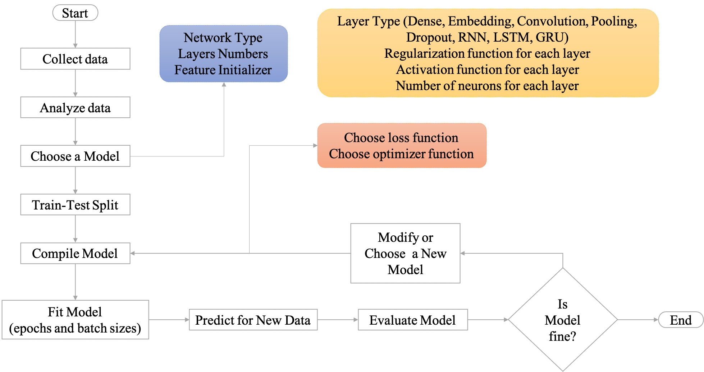

Neural Network From Scratch¶
This notebook provides an intuitive understanding of the mechanism of the neural network, or deep learning.
Important steps in neural network:
Forward propagation
matrix multiplication
weights, biases, and activation functions
Back propagation
derivatives and partial derivatives
chain rules
Gradient descent
Batch
Mini-batch
Stochastic gradient descent
import numpy as np
import matplotlib.pylab as plt
Workflow of Neural Network¶

Three major variations of neural networks
Multi-layer Perceptron
Convolutional Neural Network
Recurrent Neural Network
Keras Model API for model building
Sequential API
Functional API
Core Modules API
Activations
Optimizers
Losses
Metrics
Initializers
Regularizers
Dataset
Callback Modules
Visualizations
Utilites
Neural Network Overview¶

Neural network is a type of machine learning algorithm modeled on human brains and nervous system.
The model is believed to process information in a similar way to the human brain.
A neural network often consists of a large number of elements, known as nodes, working in parallel to solve a specific problem. These nodes are often organized into different layers.
Each node transforms the input values into the output values based on the weights (parameters) of the nodes.
The data transformation from the input to the output is in general referred to as forward propagation of the network.
When the predicted output is compared with the true label, we can evaluate the network performance by computing the loss of the network.
Then we determine the proportion of the losses that may be attributed to each model parameter. This process goes from the losses of the predicted output backward to the original inputs. This step is referred to as the back propagation of the network.
Neurons¶
Neural network consists of neuros, which allow us to model non-linear relationships between input and output data.
Given an input vector, traditional linear transformation can only model a linear relationship between X and y:
A neron is like a linear transformation but with an extra activation function.
This mechanism of activation function in each neuron will ultimately determine the output of the neuron.

Activation Functions¶
In neural network, the activation function of a node determines whether the node would activate the output given the weighted sum of the input values.
Different types of activation functions may determine the cut-offs for output activation in different ways.
Sigmoid function: This function converts the y values into values within the range of 0 and 1 (i.e., a probability-like value).
Step function: This function converts the y values into binary ones, with only the positive values activated.
ReLU (Rectified Linear Unit) function: This function converts the y values by passing only positive values and zero for negative y.
Softmax function: This function converts the y values into normalized probability values.
def step_function(x):
y = x > 0
return y.astype(np.int)
def sigmoid(x):
return 1/(1+np.exp(-x))
def relu(x):
return np.maximum(0,x)
# def softmax(x):
# exp_x = np.exp(x)
# sum_exp_x = np.sum(exp_x)
# y = exp_x/sum_exp_x
# return y
def softmax(x):
c = np.max(x)
exp_x = np.exp(x-c) # avoid overflow issues
sum_exp_x = np.sum(exp_x)
y = exp_x/sum_exp_x
return y
# step function
x = np.arange(-5.0, 5.0, 0.1)
plt.plot(x, step_function(x))
plt.ylim(-0.1, 1.1)
plt.show()

## sigmoid function
plt.plot(x, sigmoid(x))
plt.ylim(-0.1, 1.1)
plt.show()

# ReLU
plt.plot(x, relu(x))
plt.ylim(-1, 6)
plt.show()

Layers¶

A neural network can be defined in terms of depths and widths of its layers.
Depth: How many layers does the network have?
Width: How many neurons does each layer have?
A network can consist of several layers.
Each layer can have various numbers of neurons.
For each layer, the shape of the input tensor, the number of its neurons, and the shape of its output are inter-connected. These settings will determine the number of parameters (i.e., weights) needed to train.
Layer, Parameters, and Matrix Mutiplication¶


Each layer transforms the input tensor into the output tenser based on its layer parameters.
This transformation is a matrix multiplication, running in parallel for all nodes of the layer.
Building a Neural Network Model¶

Usually we need to define the architecture of the neural network model in terms of depths and widths of the layers.
After we define the structure of the network and initialize the values for all parameters, the training requires an iterative processing involving:
Forward Propagation: It refers to the process of transforming the data values by moving the input data through the network to get output.
Define your loss function.
Calculate Total Error based on the loss function.
Calculate Gradients via Back propogation
Update the weights based on gradients.
Iterate the process until the stop-condition is reached.
import numpy as np
import matplotlib.pylab as plt
Forward Propagation¶

Neural network is a model with weights for data/value transformation.
The input data values will be transformed according to the weights of the neural network.
Given a two-layer network, with two input values \(x1\) and \(x2\), to get the values of the three outputs in the second layer, \(a_1^{(1)}\), \(a_2^{(1)}\), \(a_3^{(1)}\), we compute the dot product of the X and W.
X refers to the input vector/matrix
W refers to the network weights, which is a 2 x 3 matrix in the current example
The weights are represented as the links in-between the first and second layers
These weights can be mathematically represesnted as a 2 x 3 Matrix W
Taking the dot product of the input values X and the weight matrix W is referred to as the forward propagation of the network.
Forward propagation gives us the values of the nodes in the second layer
X = np.array([1,2])
X.shape
(2,)
W = np.array([[1,3,5],[2,4,6]])
W.shape
(2, 3)
Y = np.dot(X,W)
print(Y)
[ 5 11 17]
Weights, Biases, and Activation Functions¶
The output of a node in the network is computed as the sum of the weighted inputs and the bias. Take \(a^{(1)}_1 \) for example:
Then the output values go through the activation function and this result would indicate the final output of the node.
Not all the nodes need to have an activation function.
X = np.array([1.0, 0.5])
W1 = np.array([[0.1, 0.3, 0.5], [0.2, 0.4, 0.6]])
B1 = np.array([0.1,0.2,0.3])
print(X.shape)
print(W1.shape)
print(B1.shape)
(2,)
(2, 3)
(3,)
A1 = np.dot(X, W1) + B1
print(A1)
Z1 = sigmoid(A1)
print(Z1)
Z2 = softmax(A1)
print(Z2)
[0.3 0.7 1.1]
[0.57444252 0.66818777 0.75026011]
[0.21198272 0.31624106 0.47177622]
Learning and Training¶
Forward propagation shows how the network takes the input values, transforms them, and produces the output values based on the network parameters (i.e., weights).
The network needs to learn the weights that best produce the output values according to some loss function.
The key is we compute the differences between the real outputs of the network and the target outputs. The model should aim to minimize these differences, which are commonly referred to as errors of the model.
Loss Functions¶

If the target ouputs are numeric values, we can evaluate the errors (i.e., the differences between the actual model outputs and the target outputs) using the mean square error function.
If the target outputs are labels, we can evaluate the errors (i.e., the differences between the actual model labels and the target labels) using the cross entory error function.
The function used to compute the errors of the model is referred to as the loss function.
Error based on One Sample¶
Mean Square Error
Cross Entropy Error
def mean_square_error(y, t):
return(0.5 * np.sum((y-t)**2))
def cross_entropy_error(y, t):
delta = 1e-7 # avoid log(0)
return -np.sum(t * np.log(y + delta))
## mean square error
y = [0.1, 0.05, 0.6, 0.0, 0.05, 0.1, 0.0, 0.1, 0.0, 0.0] # predicted values
t = [0, 0, 1, 0, 0, 0, 0, 0, 0, 0] # true label
print(mean_square_error(np.array(y), np.array(t)))
print(cross_entropy_error(np.array(y), np.array(t)))
0.09750000000000003
0.510825457099338
Errors based on Batch Samples¶
If the training is based on a sample of batch size N, we can compute the average loss (or total errors) of the batch sample:
We can revise the
cross_entropy_error()function to work with outputs from a min-batch sample.
# adjust the function to for batch sample outputs
def cross_entropy_error(y, t):
if y.ndim==1:
t = t.reshape(1, t.size)
y = y.reshape(1, y.size)
batch_size = y.shape[0]
return -np.sum(t*np.log(y + 1e-7))/batch_size
When the labels uses one-hot encoding, the function can be simplified as follows:
def cross_entropy_error(y, t):
if y.ndim==1:
t = t.reshape(1, t.size)
y = y.reshape(1, y.size)
batch_size = y.shape[0]
# because for one-hot labels
# cross-entropy sums only the values of the true labels `1`
return -np.sum(np.log(y[np.arange(batch_size),t] + 1e-7))/batch_size
Gradient Descent¶
With the Loss Function, we can now perform the most important step in model training – adjusting the weights of the model.
The mechanism behind the neural network training steps is that we need to figure out:
how the change of a specific parameter (i.e., weight) in the model may lead to the change (i.e., decrease) of the values from the Loss Function? (i.e., How much does a change in a specific weight affect the total error?)
Then we would know how much of the total error each wight in the model is responsible for.
These turn out to be the basis for parameter adjustments.
The error that a specific weight is responsible for is referred to as the gradient of the parameter.
Mathematically, the gradient of a weight is the partial derivative of a weight in relation to the loss function.
Chain Rule and Back Propagation¶
Because there are many parameters in a network, we can compute the gradients (or partial derivatives) of all the weights using the chain rules of derivatives.
Specifically, the total error is essentially broken up and distributed back through the network to every single weight with the help of chain rule:
This process is referred to as back propagation: moving back through the network, back-propagating the total errors to every single weight, and updating the weights.
The principle of weights-updating: the larger the gradient, the more the adjustments.
The above adjustment formula suggests that the weight updates are proportional to the partial derivatives of the weight.
The \(\eta\) in the formula controls the amount of adjustment, which is referred to as the learning rate.
Some Math¶
The following presents some important mathematical constructs related to the understanding of neural network.
Elementwise Operations of Matrix¶
A two-dimensional matrix
x = np.array([[1,2],[3,4],[4,6]])
x
array([[1, 2],
[3, 4],
[4, 6]])
print(x+1)
print(x*5)
print(x/5)
[[2 3]
[4 5]
[5 7]]
[[ 5 10]
[15 20]
[20 30]]
[[0.2 0.4]
[0.6 0.8]
[0.8 1.2]]
Matrix Elementwise Multiplication
x = np.array([[1,2],[3,4]])
y = np.array([[5,6],[7,8]])
print(x)
print(y)
print(x*y)
[[1 2]
[3 4]]
[[5 6]
[7 8]]
[[ 5 12]
[21 32]]
Broadcast¶
In matrix elementwise computation, the smaller tensor will be broadcasted to match the shape of the larger tensor.
Axes (called broadcast axes) are added to the smaller tensor to match the ndim of the larger tensor.
The smaller tensor is repeated alongside these new axes to match the full shape of the larger tensor.
x = np.array([[1,2],[3,4]])
y = np.array([10,20])
print(x.shape)
print(y.shape)
xy = x*y
print(xy)
print(xy.shape)
(2, 2)
(2,)
[[10 40]
[30 80]]
(2, 2)
Matrices Dot Production¶
(Source: Chollet [2018], Ch 2., Figure 2.5)
The most common applications may be the dot product between two matrices. You can take the dot product of two matrices x and y (dot(x, y)) if and only if x.shape[1] == y.shape[0]. The result is a matrix with shape (x.shape[0], y.shape[1]), where the coefficients are the vector products between the rows of x and the columns of y.
x = np.array([[1,2],[3,4],[5,6]])
y = np.array([[5,6,7],[8,9,10]])
xy_dot = np.dot(x,y)
print(xy_dot)
[[21 24 27]
[47 54 61]
[73 84 95]]
Matrices Dot Production and Forward Propogation¶
For example, let’s assume that we have a word, one-hot encoded as [0,1,0,0,0,0].
An embedding model consists of parameters like the two-dimensional tensor shown below.
The output of the model is the dot product of the input word vector and the model parameter tensor.
word_one_hot = np.array([0,1,0,0,0,0]).reshape(6,1)
word_one_hot.shape
print(word_one_hot)
model_parameters = np.array([[-2.8, 1.6, 0.9, 0.7, -0.7, -1.8],
[0.3, -2.3, 0.8, 1.8, 1.5, 0.7],
[0.9,0.3, -1.6, -2.8,0.5, 0.4],
[1.8, -0.5, -1.6, -2.8, -1.7, 1.7]])
[[0]
[1]
[0]
[0]
[0]
[0]]
np.dot(model_parameters,word_one_hot)
array([[ 1.6],
[-2.3],
[ 0.3],
[-0.5]])
Derivatives¶
Given a normal function, \(f(x) = y \) , if the \(x\) value changes, \(y\) will change as well.
So if we increase \(x\) by a small factor \(h\), this results in a small change to y, i.e., \(f(x+h) - f(x)\).
We can then compute the change of \(y\) relative to the small change of \(x\), i.e., \(\frac{f(x+h) - f(x)}{h}\)
When \(h\) is very very small around a certain point \(p\), we can then estimate the change of \(y\) at the point when \(x = p\), i.e., \(\lim_{h \to 0} \frac{f(x+h) - f(x)}{h}\)
This instantaneous change of \(y\) is called the derivetaive of \(x\) in \(p\).
If it is negative, it means a small change of \(x\) around \(p\) will result in a decrease of \(f(x)\)
If it is positive, a small change in \(x\) will result in an increase of \(f(x)\).
The absolute value (i.e., the magnitude) of the derivative indicates how quickly this increase or decrease will happen.
This can be mathematically represented as follows:
The deriative turns out to be the slope of the tangent line at \(x = p\).
If we are trying to update \(x\) by a factor \(h\) in order to minimize \(f(x)\), and we know the derivative of \(\frac{\partial f}{\partial x}\), we have everything we need:
the derivative completely describes how \(f(x)\) evolves when we change \(x\).
If we want to reduce the value of \(f(x)\), we just need to move \(x\) a little in the opposite direction from the derivative.
In Deep Learning, the \(f(x)\) is often the loss function, and \(x\) is often the parameter of the model.
We initialize the parameter \(x\) with some value \(p\);
We compute the loss function \(f(x)\)
We compute the derivative of \(f(x)\) when the parameter \(x = p\)
We use the derivative to determine how to update/modify the parameter, i.e., \(x_{new} = x_{old} + \eta\frac{\partial f}{\partial x} \)
The \(\eta\) is commonly referred to as the learning rate.
def numerical_diff(f, x):
h = 1e-4
return (f(x+h)-f(x-h))/(2*h)
def tangent_line(f, x):
d = numerical_diff(f, x) ## change of y when a very small change in x
#print(d)
# d turns out to be the slope of the tangent line
y = f(x) - d*x
return lambda t: d*t + y
Take the derivates of the following function when x = 5 and 10:
def fun_x(x):
return 4.0*x**2 + 2.0*x
# plot the function
x = np.arange(0.0, 20.0, 0.1)
y = fun_x(x)
tf5 = tangent_line(fun_x, 5)
y5 = tf5(x)
tf10 = tangent_line(fun_x, 10)
y10 = tf10(x)
plt.xlabel("x")
plt.ylabel("f(x)")
plt.plot(x,y)
plt.plot(x,y5)
plt.show()

plt.xlabel("x")
plt.ylabel("f(x)")
plt.plot(x,y)
plt.plot(x,y10)
plt.show()

print(numerical_diff(fun_x, 5)) # small change of x when x = 5 will slighly change y in positive direction
print(numerical_diff(fun_x, 10)) ## small change of x when x = 10 will greatly change y in positive direction
41.99999999997317
81.99999999987995
In python, we use the numerical differentiation method to find the derivative of \(f(x)\) when x = 5 and 10.
We can use the analytic differentiation method and derive the derivatie function \(f'(x)\) first:
Numerical differentiation produces derivatives with errors; analytic differentiation produces exact derivatives.
Partial Derivatives¶
When a function has many parameters, we can take the derivate of the function with respect to one particular parameter.
This parameter-specific derivative is called partial derivative.
Take the partial derivatives of the following function:
Once if we have defined the loss function for the model, we can calculate to what extent the change in weights would affect the change in loss function
The partial derivative refers to how a change in a specific weight \(x_1\) affects the total error.
## fun_2 has two variables/weights
def fun_2(x):
return x[0]**2+x[1]**2
When \(x_0=3\) and \(x_1=4\), compute the partial derivative of \(x_0\), \(\frac{\partial f}{\partial x_0}\)
def fun_2_tmp1(x0):
return x0**2+4.0**2
numerical_diff(fun_2_tmp1, 3.0)
6.00000000000378
When \(x_0=3\) and \(x_1=4\), compute the partial derivative of \(x_1\), \(\frac{\partial f}{\partial x_1}\)
def fun_2_tmp2(x1):
return 3.0**2+x1**2
numerical_diff(fun_2_tmp2, 4.0)
7.999999999999119
Gradient Descent¶
Gradients¶
When a function includes more than one parameters, we can compute the partial derivative of the function with respect to each parameter.
When all partial derivatives are concatenated into a vector, this vector is called the gradient.
That is, for a complex function with multiple parameters (e.g., \(f(x_0, x_1) = \beta x_0 + \beta x_1\)), we can calculate the partial derivatives of each parameter all at once,and represent them in a vector, which is referred to as gradient, i.e: $\( (\frac{\partial f}{\partial x_0}, \frac{\partial f}{\partial x_1}) \)$
Each parameter estimation value pair, \((x_0,x_1)\), should correspond to a gradient.
Intuitive understanding of the gradient:
The gradient of a specific \((x_0,x_1)\) indicates how the changes of the parameter values \((x_0,x_1)\) may contribute to the change of \(f(x_0,x_1)\).
The gradient of a specific \((x_0,x_1)\) is a vector with the direction pointing at the global minimum of the function.
The more farther the \((x_0,x_1)\) is way from the global minimum, the larger the gradient vector.
In Deep Learning, the \(f(x_0,x_1)\) is often the loss function, and \(x_0,x_1\) are often the parameters of the model.
We initialize the parameters \(x_0,x_1\) with some values \(p_0, p_1\);
We compute the loss function \(f(x_0,x_1)\)
We compute the gradient of \(f(x_0,x_1)\) when the parameter \(x_0 = p_0\) and \(x_1 = p_1\)
We use the gradient to determine how to update/modify all the model parameters, i.e.,
The \(\eta\) is again learning rate.
Types of Gradient Descent¶
Batch Gradient Descent: Update the model weights after one epoch of the entire training set.
Stochastic Gradient Descent (SGD): Update the model weights after every instance of the training set (online).
Mini-batch Gradient Descent: Update the model weights after a subset of the training set. (Recommended!)
Intuition for Gradient¶
In the following graph, each vector represents the gradient at a specific \((x_0, x_1)\), i.e., when \(x_0 = p_0\) and \(x_1 = p_1\):